I own a very old ‘flat’ screen television from 2009. One of the reason this TV is still kicking around is because I have a strange sentimental affection for it. Another is that I have written automation for it that works really well and it would be a pain to migrate away from it.
It does have a problem however, the TV tends to hit resonance frequency very often with its built-in speakers, causing the body of the unit to vibrate something awful and produce some ear wrenching sounds as a result.
So, to extend the longevity of this relic, I decided to invest in a cheapo soundbar, the Majority Snowdon II . This has worked to fix the resonance issue but has somewhat moved my problems laterally as it came with its own caveats. Namely, its a big dumb dumb.
That’s right, it’s not a smart device, its about as dumb as they come in 2022. It has an infrared remote, some physical buttons and that’s it! However, I had a plan when I bought this device. I thought I could probably make it smarter. So after losing the remote down the side of the couch for the 87th time I decided to crack it open and see what could be done.
Table of Contents
Start
My original intentions when cracking this open was to start looking at datasheets for on-board chips to try and find a foothold somewhere on the board. However, looking at the mainboard, I was very quickly struck with an idea.
 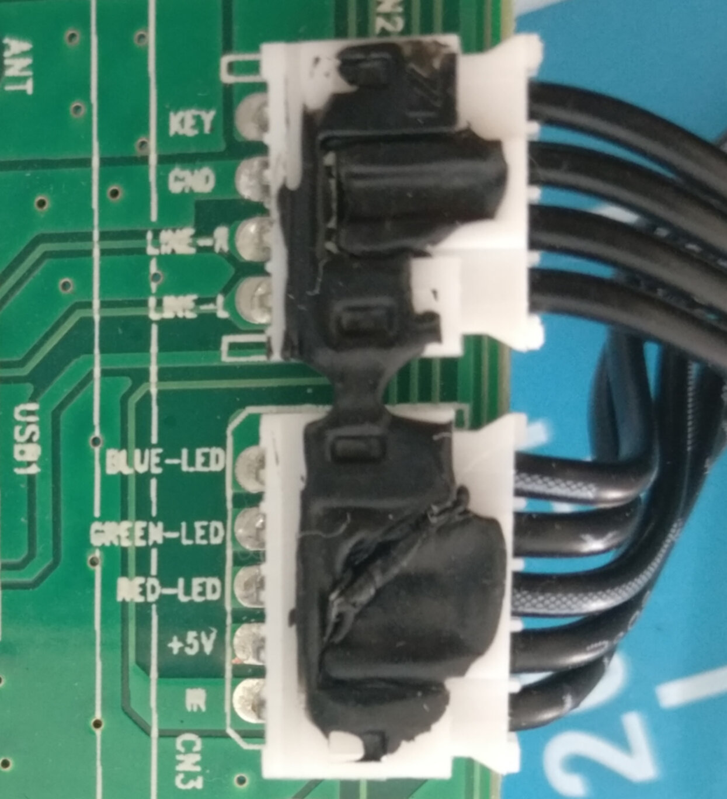
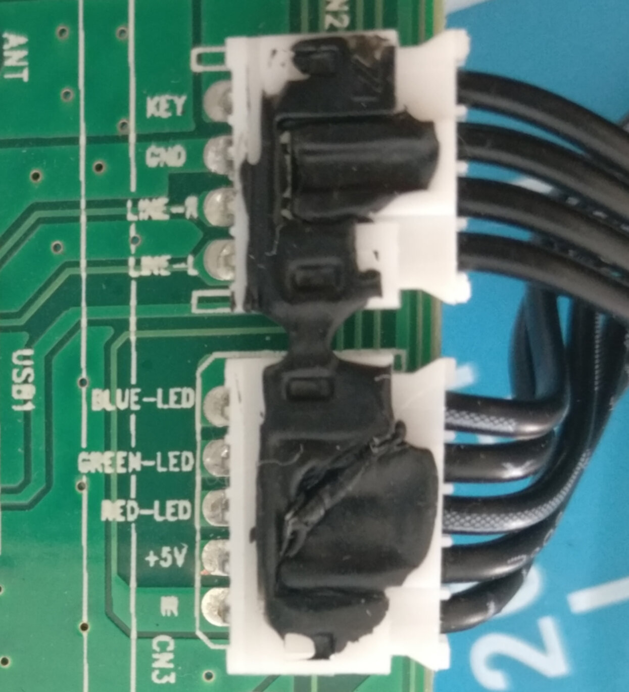
There are two very cleanly labelled connection jacks that go to the daughter board. And the daughter board just happens to host all of the interfacing options on the device: the physical buttons, an indicator LED and the infrared receiver.
So lets just hijack these pre-existing interfaces for our own purposes!
Plan of Attack
Now that we know the project has some feasbility, lets lay the ground rules for what success will look like. We want to be able to
- Get the current state of Snowdon using the RGB lines from the status LED
- Mimic the signal coming in on the Infrared line so that we can send our own infrared commands to Snowdon
We also want to have control over the new super powers we will bestow upon the Snowdon. At this point, I had already earmarked the Raspberry Pi Pico W as the microcontroller of choice for this project for a few reasons:
- It has a WiFi chip, which means we can turn the snowdon into a true IoT device
- It has Programmable IO , which means we can write our own driver for the Infrared signalling.
- It accepts 5v power in, which means we can power it directly from the mainboard
- I had a bunch of them in my desk drawer 😀
Decoding the Indicator LED
The daughter board has a 4 pin RGB indicator LED that can display a number of colors. The LED is common anode which means it is active low. Each of the 3 color pins are broken out on a connection jack on the mainboard. The user manual actually tells us the possible colors and their meaning too:
| State | LED Indicator Light |
|---|---|
| Power Off | Red |
| AUX Mode | White |
| Line In Mode | Green |
| Optical Mode | Yellow |
| Bluetooth Ready | Flashing Blue |
| Bluetooth Connected | Blue |
This is enough information for us to decode which color is currently being displayed on the LED and infer a state from it.
We can achieve this easily by wiring 3 consecutive GPIO pins to the mainboard.
Wiring
|
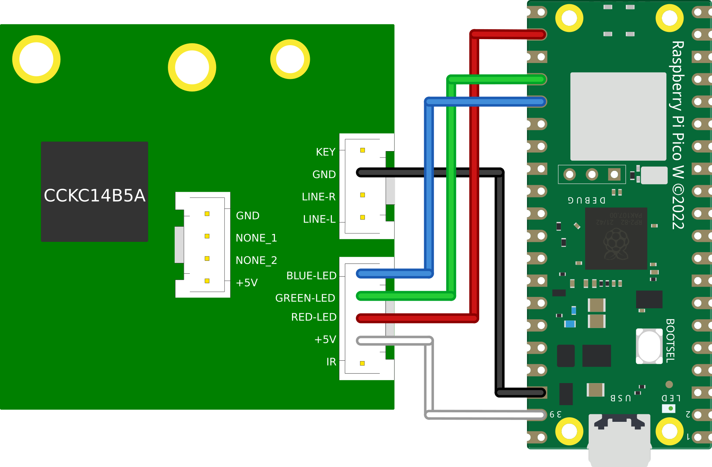 |
Code
Since we are only concerned with 3 pins (17,18 & 19), we can create a 32 bit bit-mask that will select only these pins:
#define RGB_BASE_PIN 17
const uint32_t RGB_MASK = 1 << RGB_BASE_PIN | // Pin 17
1 << RGB_BASE_PIN + 1 | // Pin 18
1 << RGB_BASE_PIN + 2; // Pin 19
Then in our main loop we can initialise the pins as input with our mask:
gpio_init_mask(RGB_MASK);
And then get the current value of each of the 3 pins by ANDing the value of the GPIO register with our mask. We then shift this to the right to clear out the left over zeros from our AND operation and end up with a 3 bit value representing our 3 color lines:
// Extract desired bits from GPIO with RGB_MASK and shift right
// This gives us a 3 bit value in the form 0b<b><g><r>
uint32_t gpio = (gpio_get_all() & RGB_MASK) >> RGB_BASE_PIN;
Finally, we can pass this value into a switch statement and based on the value of the 3 color bits, we can print a different message:
switch(gpio) {
case 0b110: // red
printf("off\n");
break;
case 0b100: // yellow
printf("optical\n");
break;
case 0b000: // white
printf("aux\n");
break;
case 0b101: // green
printf("line-in\n");
break;
case 0b011: // blue
printf("bluetooth\n");
break;
case 0b111: // off
printf("none\n");
break;
default:
printf("unknown\n");
}
Full code
#include <stdio.h>
#include "pico/stdlib.h"
#define RGB_BASE_PIN 17
const uint32_t RGB_MASK = 1 << RGB_BASE_PIN | // Pin 17
1 << RGB_BASE_PIN + 1 | // Pin 18
1 << RGB_BASE_PIN + 2; // Pin 19
int main() {
stdio_init_all();
// Enable pins 17, 18 & 19 as input
gpio_init_mask(RGB_MASK);
uint32_t gpio;
while (true) {
// Extract desired bits from GPIO with RGB_MASK and shift right
// This gives us a 3 bit value in the form 0b<b><g><r>
gpio = (gpio_get_all() & RGB_MASK) >> RGB_BASE_PIN;
// Perform comparisons on the 3 bits to determine the state of the RGB LED
switch(gpio) {
case 0b110: // red
printf("off\n");
break;
case 0b100: // yellow
printf("optical\n");
break;
case 0b000: // white
printf("aux\n");
break;
case 0b101: // green
printf("line-in\n");
break;
case 0b011: // blue
printf("bluetooth\n");
break;
case 0b111: // off
printf("none\n");
break;
default:
printf("unknown\n");
}
sleep_ms(500);
}
return 0;
}
Demo
This simulation demonstrates our ability to decode the color of an RGB LED. The switches on the breadboard can be toggled to ‘hardcode’ an RGB value which our program will then decode on a 500ms timer.
Mimicing an Infrared Remote
The infrared (IR) protocol used by the Snowdon and indeed in the majority of consumer products is called NEC. When you press a button on your remote, a single NEC message will be sent, carrying 32 bits (uint32_t) of information:
- 8 bit device address
- 8 bit device address (logical inverse)
- 8 bit command
- 8 bit command (logical inverse)
The full message looks like this:
And consists of the following:
- 9ms (562.5us x 16) leading LOW pulse
- 4.5ms (562.5us x 8) HIGH pulse
- 32 bits of information
- 562.5us trailing LOW pulse
Each bit in the message starts with a LOW pulse for 562.5us, followed by:
- If the bit to be encoded is LOW, a HIGH pulse for 562.5us
- If the bit to be encoded is HIGH, a HIGH pulse for 1.6ms (562.5us x 3)
It is worth noting there are a few nuances with the NEC protocol when transmitting normally via an LED:
- When sent via an LED the message is inverted to what we see in the diagram
- When sent via an LED the message is modulated with a 38khz carrier wave
We can safely ignore both of these facts because we will be circumventing the usual front door of an IR LED and directly connecting our Pico to the receiving IR line on the Snowdon mainboard.
Now that we understand a little about the NEC protocol, we can wire up the Pico to the Snowdon’s IR line
Wiring
|
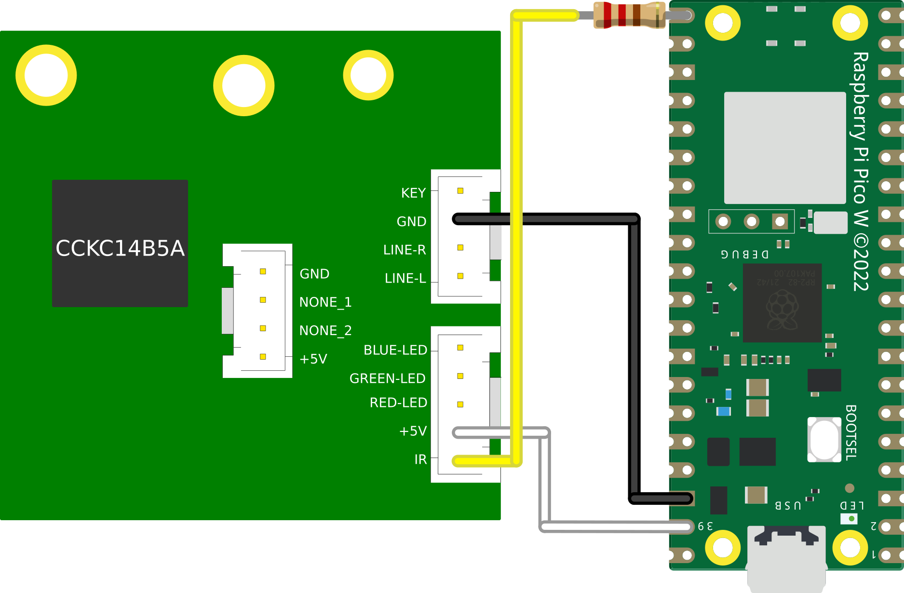 |
The 220Ω resistor is required to give priority to the IR transceiver on the daughterboard. Otherwise legitimate IR codes sent via the remote control may get dropped
Code
To achieve the timing requirements of the protocol, we are going to be writing a Programmable IO (PIO) assembly program that will take a 32-bit unsigned integer (uint32_t) as input, translate it into a a NEC formatted message and broadcast it on GPIO 16.
PIO is a bit of a hard nut to crack so here are some suggested materials if its your first PIO rodeo:
The first thing we are going to configure for our driver is side set. Side set allows us to drive up to 5 consecutive pins as a side effect of a PIO ASM instruction. For our purposes we are only interested in driving a single GPIO pin with our IR data, so we will declare this to the compiler with a label:
.side_set 1
Side setting steals bits from the delay function in PIO. Stealing 1 bit for side setting, as we are doing, reduces this maximum delay value from 31 ticks to 15 ticks
In our init function we also need to perform some setup to assosiate the variable pin (GPIO 16) with the side set function:
sm_config_set_sideset_pins(&c, pin);
We also need to perform some setup functions to enable our pin as output and give it an initial value:
pio_gpio_init(pio, pin); // Set pin function to GPIO
pio_sm_set_consecutive_pindirs(pio, sm, pin, 1, true); // Set the pin direction to output
pio_sm_set_pins_with_mask(pio, sm, 1u << pin, 1); // Set the initial value of the pin to 1 (HIGH)
gpio_pull_up(pin); // Set the default value of the pin to 1 (HIGH)
Lastly, we need to configure the clock. Looking at the timing diagram, our first instinct may be to set the clock to ~560us. so that each PIO instruction takes ~560us to execute. However, as will become evident later on, we actually need the flexibility to perform 2 instructions per ~560us window. So that is what we will set the clock to:
// 2 ticks per 560us window
float div = clock_get_hz(clk_sys) / (2 * (1 / 562.5e-6f));
sm_config_set_clkdiv(&c, div);
The body of the PIO program looks like this:
.wrap_target
pull side 1
pulse_init:
nop side 0 [15]
nop side 0 [15] ; 9ms on
nop side 1 [15] ; 4.5ms delay
next:
out y 1 side 0 ; Read next bit from OSR into y, side set LOW for 1 tick (280us)
jmp !y short side 0 ; If y == 0, goto short, side set LOW for 1 tick (280us)
long:
jmp bit_loop side 1 [4] ; Side set HIGH for 5 ticks (1400us)
short:
nop side 1 ; Side set HIGH for 1 tick (280us)
bit_loop:
jmp !osre next side 1 ; goto next if osr is not empty, side set HIGH for 1 tick (280us)
end_pulse:
nop side 0 [1] ; Side set LOW for 2 ticks (560us)
.wrap
Let’s disect this to understand how we are achieving NEC transmission.
pull side 1
The pull instruction will pull 32 bits into the program as input. This call will block until we give the program our uint32_t to encode. Additionally we:
- Use side set to drive GPIO 16 HIGH, this will remain HIGH whilst the
pullinstruction is blocked
pulse_init:
nop side 0 [15]
nop side 0 [15] ; 9ms on
nop side 1 [15] ; 4.5ms delay
After the user provides input, execution continues and we enter the pulse_init label, where we:
- Execute the
nopinstruction which does nothing for a single tick. - Delay each
nopfor 15 ticks, such that each instruction takes 16 ticks total. - Use side set to drive GPIO 16 LOW for 32 ticks (9ms) and then HIGH for 16 ticks (4.5ms).
next:
out y 1 side 0 ; Read next bit from OSR into y, side set LOW for 1 tick (280us)
jmp !y short side 0 ; If y == 0, goto short, side set LOW for 1 tick (280us)
We fall through to the next label, where we:
- Pop one bit of our input into the
yregister. - Do a conditional jump, if the bit’s value is 0 we jump to the
shortlabel. - Side set LOW for both instructions, achieving our initial LOW pulse for the first bit.
long:
jmp bit_loop side 1 [4] ; Side set HIGH for 5 ticks (1400us)
If we did not conditionally jump, then we fall through to the long label, where we:
- Unconditionally jump to the bitloop label.
- Side set HIGH with a 4 tick delay, totalling 5 ticks
short:
nop side 1 ; Side set HIGH for 1 tick (280us)
Else, we conditionally jumped to the short label, where we:
- Do nothing (
nop). Due to the positioning of our labels we can simply fall through to thebit_looplabel - Side set HIGH on GPIO 16 for a single tick
bit_loop:
jmp !osre next side 1 ; goto next if osr is not empty, side set HIGH for 1 tick (280us)
Regardless of our branching path, we end up in the bit_loop label. Where we:
- Conditionally jump back up to the
nextlabel as long as we still have input bits left to transcode - Side set HIGH on GPIO 16 for a single tick. This means we have driven the GPIO HIGH for 6 ticks if we got here via
long, or 2 ticks viashort!
We then start again from next until we have processed all 32 bits:
end_pulse:
nop side 0 [1] ; Side set LOW for 2 ticks (560us)
After all bits have been exhausted, we finally enter the end_pulse label, where we:
- Do nothing for a single tick
- Side set LOW on GPIO 16 for 2 ticks, achieving our trailing pulse
- Wrap back around to the first pull instruction to wait for next input
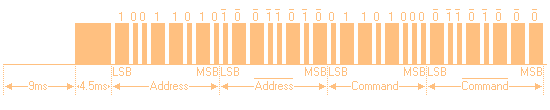
Full code
; Implements an inverted NEC infrared protocol WITHOUT carrier signal
; For use in wired connection to IR line. Each instruction is 280us
.program nec
.side_set 1
.wrap_target
pull side 1
pulse_init:
nop side 0 [15]
nop side 0 [15] ; 9ms on
nop side 1 [15] ; 4.5ms delay
next:
out y 1 side 0 ; Read next bit from OSR into y, side set LOW for 1 tick (280us)
jmp !y short side 0 ; If y == 0, goto short, side set LOW for 1 tick (280us)
long:
jmp bit_loop side 1 [4] ; Side set HIGH for 5 ticks (1400us)
short:
nop side 1 ; Side set HIGH for 1 tick (280us)
bit_loop:
jmp !osre next side 1 ; goto next if osr is not empty, side set HIGH for 1 tick (280us)
end_pulse:
nop side 0 [1] ; Side set LOW for 2 ticks (560us)
.wrap
% c-sdk {
#include "hardware/clocks.h"
static inline void nec_transmit_program_init(PIO pio, uint sm, uint offset, uint pin) {
pio_sm_config c = nec_program_get_default_config(offset);
sm_config_set_sideset_pins(&c, pin);
pio_gpio_init(pio, pin);
pio_sm_set_consecutive_pindirs(pio, sm, pin, 1, true);
pio_sm_set_pins_with_mask(pio, sm, 1u << pin, 1);
gpio_pull_up(pin);
sm_config_set_out_shift(&c, true, false, 32);
// 2 ticks per 560us window
float div = clock_get_hz(clk_sys) / (2 * (1 / 562.5e-6f));
sm_config_set_clkdiv(&c, div);
// Init the pio state machine with PC at offset
pio_sm_init(pio, sm, offset, &c);
// Start sm
pio_sm_set_enabled(pio, sm, true);
}
%}
Demo
This simulation demonstrates our driver’s ability to mimic an infrared remote. When the switch is toggled left, it will accept input directly from the IR remote via the IR receiver.
However, when the switch is toggled to the right, we see that our PIO program is sending a random remote code out on GPIO 16 every 500ms:
Code
...
#define TX_PIN 16
...
uint32_t remote_codes[] = {
0x5da2ff00, //POWER
0xdd22ff00, //TEST
0xfd02ff00, //PLUS
0x3dc2ff00, //BACK
0x1de2ff00, //MENU
0x6f90ff00, //NEXT
0x57a8ff00, //PLAY
0x1fe0ff00, //PREV
0x9768ff00, //0
0x6798ff00, //MINUS
0x4fb0ff00, //C
0x857aff00, //3
0xe718ff00, //2
0xcf30ff00, //1
0xef10ff00, //4
0xc738ff00, //5
0xa55aff00, //6
0xad52ff00, //9
0xb54aff00, //8
0xbd42ff00, //7
};
...
while (true) {
pio_sm_put_blocking(PIO_INSTANCE, tx_sm,
remote_codes[rand() % ARRAY_SIZE(remote_codes)]);
...
sleep_ms(500);
}
Building a dunderhead HTTP server from scratch
At the time that I started this project (September 2022) there were no examples online, that I could find, of a HTTP server that utilised the C SDK for the Pico W. I did however know from some prior adventures into ESP32, that you can remain very stupid as a microcontroller and still talk HTTP, so lets roll our own HTTP server!
The way I achieved this was by building on the tcp server example over on the official pico-examples github repository.
What even is HTTP anyway?
Hypertext Transfer Protocol (HTTP) at is core is just a TCP socket with fancy strings.
Theres a great crash course
by @fasterthanlime
over on his blog that I would recommend reading.
So how do we send fancy strings?
Let’s send a standard HTTP PUT request via the cli tool curl and see what it looks like, request:
curl -X PUT http://api.int/api/v1.0/pc\?code\=status
Response:
{"status": "on"}
Plucking the request out of wireshark, we can see that the actual TCP payload contains the following information:
PUT /api/v1.0/pc?code=status HTTP/1.1\r\n
Host: api.int\r\n
User-Agent: curl/7.68.0\r\n
Accept: */*\r\n
\r\n
Let’s disect this. The first line specifies a few things: |Parameter|Value|Description| |———|—–|———–| | Method | GET | The method of the call, common methods are GET, POST, PUT, HEAD | | Target | /api/v1.0/pc?code=status | Specifies the sub-path target of the call, this allows routing in a HTTP server that hosts many different endpoints. key/value pairs can also be specified in this line | | Version | HTTP/1.1| This is the HTTP version of the call, for our purposes it will always be HTTP/1.1|
- Each line end is denoted with a carriage return
\rand line feed\n. - Each line after the first contains a header variable in the form of a key/value pair.
- The final line only contains
\r\nto denote the end of the data
The response data looks like this:
HTTP/1.1 200 OK\r\n
Content-Length: 17\r\n
Content-Type: application/json\r\n
Date: Wed, 30 Nov 2022 10:40:24 GMT\r\n
Server: waitress\r\n
\r\n
{"status": "on"}
It follows a very similar format, the first line again specifies a few things:
| Parameter | Value | Description |
|---|---|---|
| Version | HTTP/1.1 | This is the HTTP version of the call, for our purposes it will always be HTTP/1.1 |
| Status Code | 200 | A numeric representation of the response status, must be a valid HTTP status code as documented here |
| Status Text | OK | A textual representation of the response status, must be paired up with the status code |
Again each preceding line is a key/value header variable. However it is worth noting that the HTTP server chose to send a JSON response.
To pull this off, the response had to contain the header Content-Length, to inform the client of how much data it was going to send. After which it appends the JSON string after the final \r\n line of the HTTP body.
This concept of setting the Content-Length header applies to the client too if we wish to send JSON in our request.
This protocol is actually simple enough that we can pick apart a HTTP request and construct responses just by doing some simple string manipulation. We don’t even need to understand anything about HTTP or JSON to speak the lingo!
Code
The first (and hardest) thing we need to do in our little HTTP server is process HTTP request messages.
We can achieve this by breaking the string up into it’s individual tokens. We are going to use the string function strpbrk to achieve this.
The man page has this to say on the strpbrk function:
SYNOPSIS
#include <string.h>
char *strpbrk(const char *s, const char *accept);
DESCRIPTION
The strpbrk() function locates the first occurrence in the string s of
any of the bytes in the string accept.
RETURN VALUE
The strpbrk() function returns a pointer to the byte in s that matches
one of the bytes in accept, or NULL if no such byte is found.
So this function takes a string and a set of deliminators, and outputs a pointer to the first deliminator it encounteres in the string.
If we look again at the top line of the HTTP request, there are indeed a fixed set of single character deliminators that denote certain parts of the line:
PUT /api/v1.0/pc?code=status HTTP/1.1\r\n
So we can extract a given token by performing a set of steps.
Define our message in a string (char *) and create a pointer to the first character:
char http_message[] = {
"PUT /api/v1.0/pc?code=status HTTP/1.1\r\n"
"Host: api.int\r\n"
"User-Agent: curl/7.68.0\r\n"
"Accept: */*\r\n"
"\r\n"
};
char *p1 = http_message;
Call the strpbrk function to obtain a pointer to the first instance of one of our deliminators:
char *p2 = strpbrk(p1, " ?=\r");
Now lets null terminate p2. By placing \0 at the position earmarked by p2, we transform the deliminator into the last character of the string:
*p2 = '\0';
If we now print p1, it will only print up to the first \0, essentially turning it into our first token:
printf("%s\n", p1);
> PUT
We can further extend this technique to iterate over each token in the first line of the HTTP request, and by keeping track of the deliminators we can tell exactly which token we just extracted.
Full code
#include <string.h>
#include <stdio.h>
int main() {
char http_message[] = {
"PUT /api/v1.0/pc?other=monkey&code=status HTTP/1.1\r\n"
"Host: api.int\r\n"
"User-Agent: curl/7.68.0\r\n"
"Accept: */*\r\n"
"\r\n"
};
// Process HTTP message body, example: "PUT /api/v1.0/pc?code=status HTTP/1.1"
// char *message_body = http_message;
char *message_body = http_message;
char *delim = " ?=&\r";
char next_delim;
char current_delim = '\0';
char *token;
while(1) {
if (*message_body == '\0') { break; }
token = message_body;
message_body = strpbrk(message_body, delim);
if (message_body == NULL) { break; }
next_delim = *message_body;
*message_body = '\0';
switch(current_delim) {
case '\0':
printf("Method\t\t%s\n", token);
break;
case ' ':
if (next_delim != '\r') {
printf("Target\t\t%s\n", token);
} else {
printf("Version\t\t%s\n", token);
}
break;
case '?':
case '&':
printf("Key\t\t%s\n", token);
break;
case '=':
printf("Value\t\t%s\n", token);
break;
}
current_delim = next_delim;
message_body++;
// Carriage return indicates we have reached the end of the first line of message body
if (current_delim == '\r') { break; }
}
return 0;
}
Within the final program we actually take this one step further and use the same technique to step through JSON as a flat file if it is provided as part of the HTTP request.
Demo
Optional: Recycling unused pins for SWD debugging
If we take a look at the mainboard again, we can see there is a 4 pin “USB” header exposed on the board with unused pins:
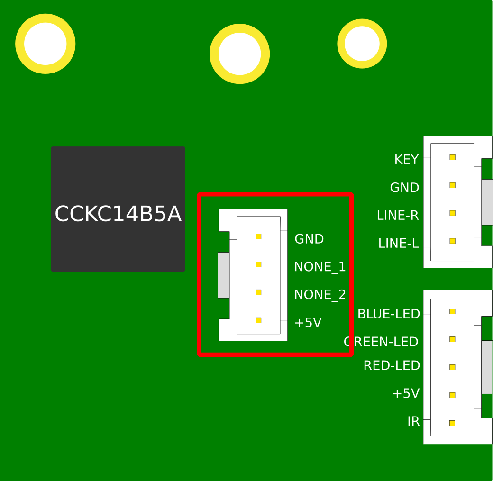I tested both NONE pins on the oscilloscope and determined that there was no activity on either pin during normal operation. As it turns out the panel on the back actually has a cut out for the USB header, which is only covered by a thin layer of mylar tape that can be cut away:
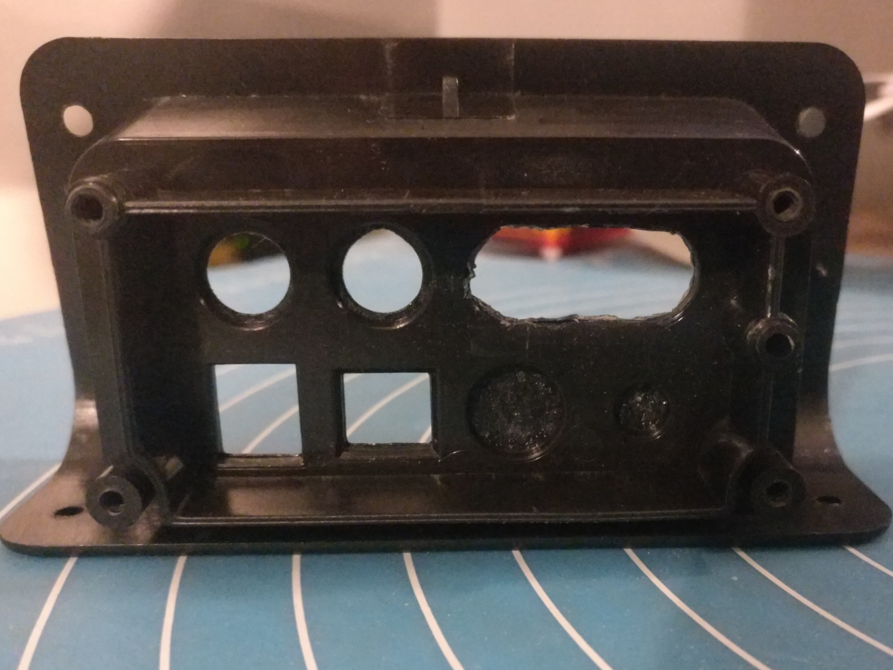

Due to this I decided to wire up the SWD debugging pins from the Pico to the unused pins so that I could perform debugging without having to re-open the unit:
|
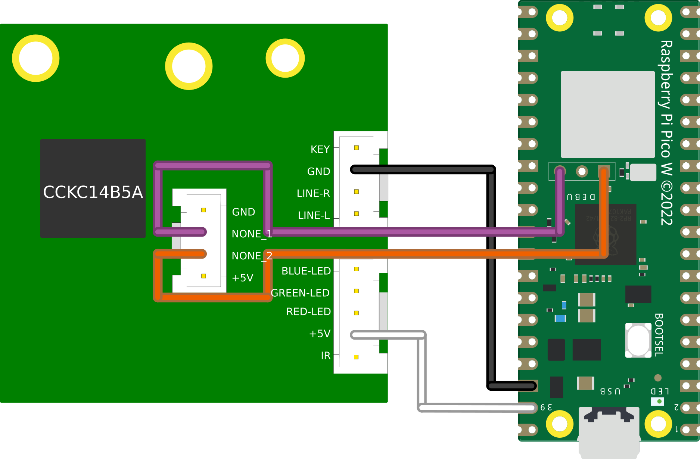 |
I would highly recommend NOT doing this, as I managed to fry the SWD pins on one of my debuggers using these pins and I am not 100% as to the reason
Tying it all together
Throughout this adventure we have developed some interesting capabilities on our Pico, we can now:
- Get the current state of the Snowdon via the RGB LED
- Send our own NEC encoded commands to the Snowdon
- Decode arbitrary HTTP requests
To bring this all together we only really need a little bit of glue code to translate a HTTP request into a call to our PIO driver or LED decoder.
This is achieve in the program by extracting a value from one of the user provided parameters passed in the HTTP request (code) and passing this into a helper function. The function translates the user provided string into a 32 bit NEC code for our PIO driver, or a HTTP_CODE_LOOKUP_STATUS command for our LED decoder:
static uint32_t http_code_lookup(char *code) {
if (!strcmp(code, "status")) { return HTTP_CODE_LOOKUP_STATUS; }
if (!strcmp(code, "power")) {return 0x807F807F;}
if (!strcmp(code, "input")) {return 0x807F40BF;}
if (!strcmp(code, "mute")) { return 0x807FCC33; }
if (!strcmp(code, "volume_up")) { return 0x807FC03F; }
if (!strcmp(code, "volume_down")) { return 0x807F10EF; }
if (!strcmp(code, "previous")) { return 0x807FA05F; }
if (!strcmp(code, "next")) { return 0x807F609F; }
if (!strcmp(code, "play_pause")) { return 0x807FE01F; }
if (!strcmp(code, "treble_up")) { return 0x807FA45B; }
if (!strcmp(code, "treble_down")) { return 0x807FE41B; }
if (!strcmp(code, "bass_up")) { return 0x807F20DF; }
if (!strcmp(code, "bass_down")) { return 0x807F649B; }
if (!strcmp(code, "pair")) { return 0x807F906F; }
if (!strcmp(code, "flat")) { return 0x807F48B7; }
if (!strcmp(code, "music")) { return 0x807F946B; }
if (!strcmp(code, "dialog")) { return 0x807F54AB; }
if (!strcmp(code, "movie")) { return 0x807F14EB; }
return HTTP_CODE_LOOKUP_UNKNOWN_VALUE;
}
We then just make the respective call in our program and return a nice hard coded JSON string in our HTTP response:
if (state->message_body->code == HTTP_CODE_LOOKUP_STATUS) {
uint32_t gpio;
do{
gpio = (gpio_get_all() & RGB_MASK) >> RGB_BASE_PIN;
switch(gpio) {
case 0b110: // red
http_generate_response(arg, "{\"onoff\": \"off\", \"input\": \"off\"}\n", "200 OK");
break;
case 0b100: // yellow
http_generate_response(arg, "{\"onoff\": \"on\", \"input\": \"optical\"}\n", "200 OK");
break;
case 0b000: // white
http_generate_response(arg, "{\"onoff\": \"on\", \"input\": \"aux\"}\n", "200 OK");
break;
case 0b101: // green
http_generate_response(arg, "{\"onoff\": \"on\", \"input\": \"line-in\"}\n", "200 OK");
break;
case 0b011: // blue
http_generate_response(arg, "{\"onoff\": \"on\", \"input\": \"bluetooth\"}\n", "200 OK");
break;
case 0b111: // off (likely in a transitioning state)
busy_wait_ms(50);
continue;
}
} while (gpio == 0b111);
return;
}
if (state->message_body->code > HTTP_CODE_LOOKUP_NO_VALUE) {
pio_sm_put_blocking(PIO_INSTANCE, 0, state->message_body->code);
http_generate_response(arg, "{\"status\": \"ok\"}\n", "200 OK");
}
This is essentially all the building blocks required to roll our own RESTful API. With that out of the way, all that’s left to do now is wire it up and compile!
Wiring
SWDIOandSWCLKare not required for normal operations, they expose the SWD debug pins on the unused USB header for easy access
|
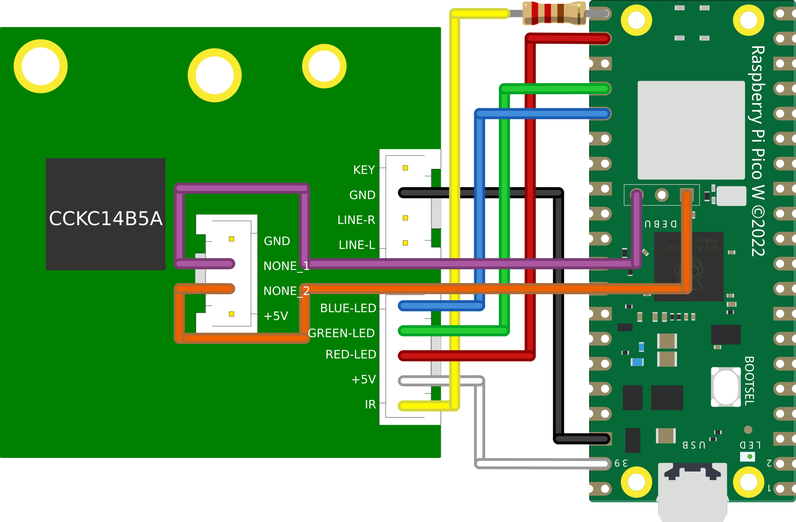 |


Compiling Guide
Please refer to the offical Getting Started guide for full details on getting a build environment setup
Due to the final software containing hardcoded WiFi credentials, it’s impossible to share a pre-built uf2. So we must install the Pico SDK and built it from scratch.
Install dependencies for SDK:
sudo apt update
sudo apt install git cmake gcc-arm-none-eabi libnewlib-arm-none-eabi build-essential
Clone SDK;
cd ~/
git clone https://github.com/raspberrypi/pico-sdk.git
cd pico-sdk
git submodule update --init
Export PICO_SDK_PATH variable:
export PICO_SDK_PATH=$HOME/pico-sdk
Clone Snowdon-II-WiFi:
git clone https://github.com/kennedn/snowdon-ii-wifi.git
Create a build directory and configure cmake with WiFi credentials:
cd snowdon-ii-wifi
mkdir build
cd build
# Replace <SSID> and <PASSWORD> with own values
cmake -DPICO_BOARD=pico_w -DWIFI_SSID="<SSID>" -DWIFI_PASSWORD="<PASSWORD>" ..
Compile the program:
cd src
make
If all goes well, a file named snowdon.uf2 should now exist under ~/snowdon-ii-wifi/build/src/.
The Pico can now be plugged in via USB whilst holding down the BOOTSEL button, and the uf2 file dropped in the volume mount.
API
The RESTful API is exposed on port 8080:
http://<ip_address>:8080
The endpoint expects a single code parameter, which can be sent via either url encoding or in the JSON body of the request, e.g:
curl -X PUT http://192.168.1.238:8080?code=status
# or
curl -X PUT http://192.168.1.238:8080 -H 'Content-Type: application/json' -d '{"code": "power"}'
And this is the full list of available code values:
| Value | Description | JSON response |
|---|---|---|
| power | Infrared Code | {"status": "ok"} |
| input | Infrared Code | {"status": "ok"} |
| mute | Infrared Code | {"status": "ok"} |
| volume_up | Infrared Code | {"status": "ok"} |
| volume_down | Infrared Code | {"status": "ok"} |
| previous | Infrared Code | {"status": "ok"} |
| next | Infrared Code | {"status": "ok"} |
| play_pause | Infrared Code | {"status": "ok"} |
| treble_up | Infrared Code | {"status": "ok"} |
| treble_down | Infrared Code | {"status": "ok"} |
| bass_up | Infrared Code | {"status": "ok"} |
| bass_down | Infrared Code | {"status": "ok"} |
| pair | Infrared Code | {"status": "ok"} |
| flat | Infrared Code | {"status": "ok"} |
| music | Infrared Code | {"status": "ok"} |
| dialog | Infrared Code | {"status": "ok"} |
| movie | Infrared Code | {"status": "ok"} |
| status | RGB LED Query | {"onoff": power_state, "input": input_state} |
power_state has the following possible values:
|Value|
|—–|
|on |
|off |
input_state has the following possible values:
|Value|
|—–|
|off |
|optical|
|aux|
|line-in|
|bluetooth|
Finish
With that we can now send HTTP commands to our Pico:

And it’s a win win because my remote control can go on its adventures into the deep recesses of the couch and I can still turn on my soundbar: